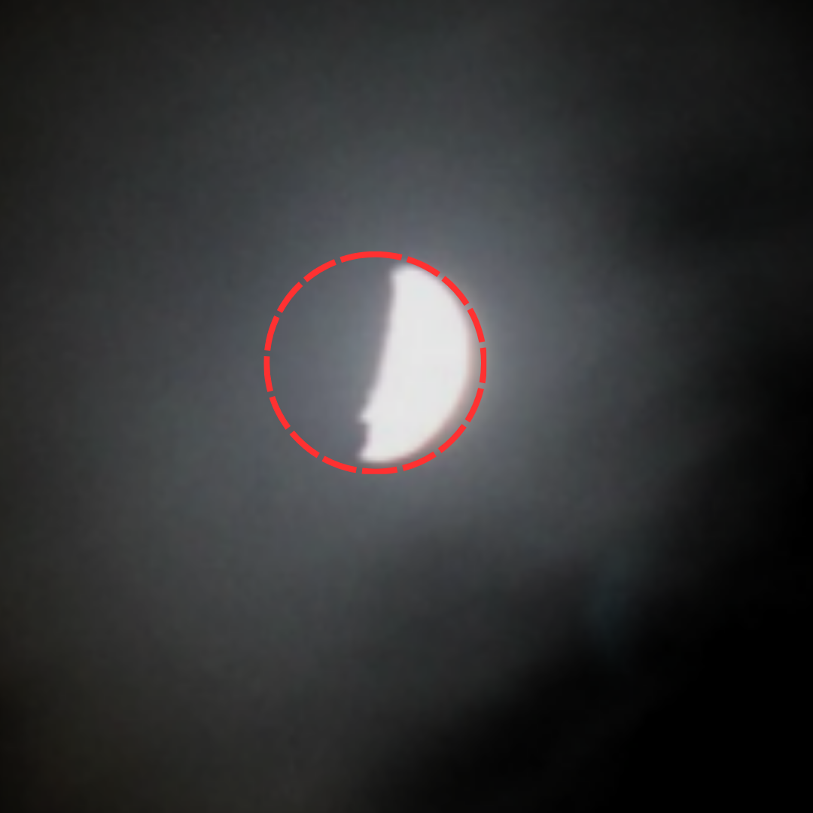
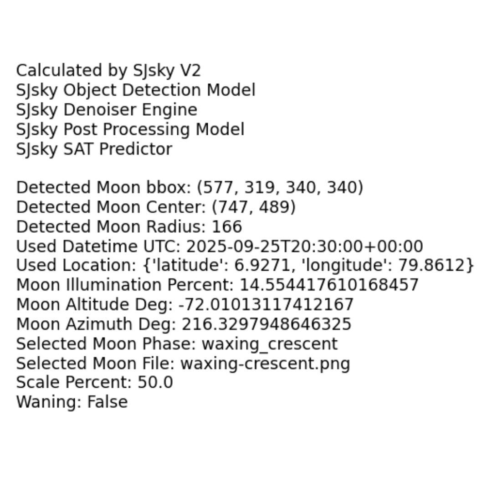
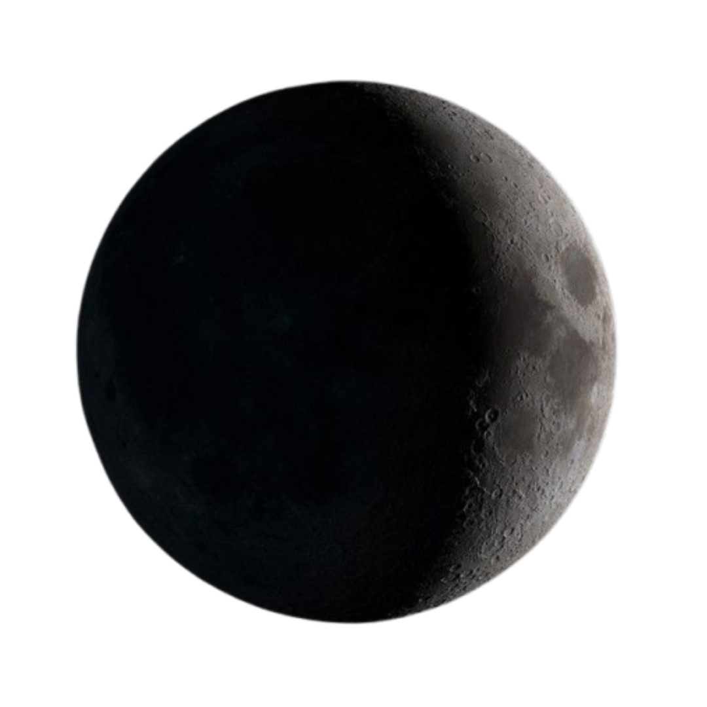
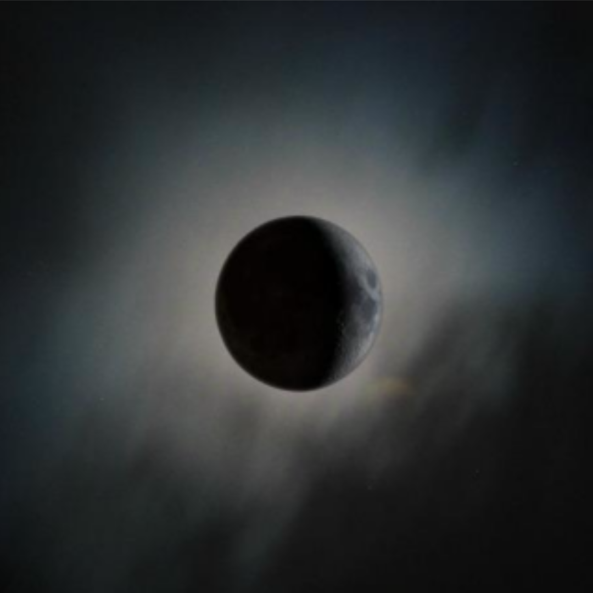

Moon Fixer
Astronomical context meets classical computer vision.
Moon Fixer detects the lunar disc in a captured image, calculates lunar parameters for the moment of capture, selects a phase-appropriate template, adapts it to match the scene, and integrates it into the original photograph. This is template-based lunar image enhancement and compositing guided by astronomical metadata and classical image processing — not a physical reconstruction of detail the camera never captured.





Detect
Identify bright circular regions using grayscale conversion, thresholding, morphology and contour analysis.
Calculate
Use date, time and geographic location to derive lunar parameters — illumination, age, altitude and azimuth.
Match
Select a template according to lunar illumination and phase at the moment of capture.
Adapt
Scale, orient, color-adjust and feather the template to match the detected disc and scene lighting.
Blend
Integrate the result into the original image using Poisson blending, with alpha compositing as a fallback.
Read the full methodology.
The complete detection, ephemeris, matching, blending and post-processing methodology is documented on the Research page and in the published paper.